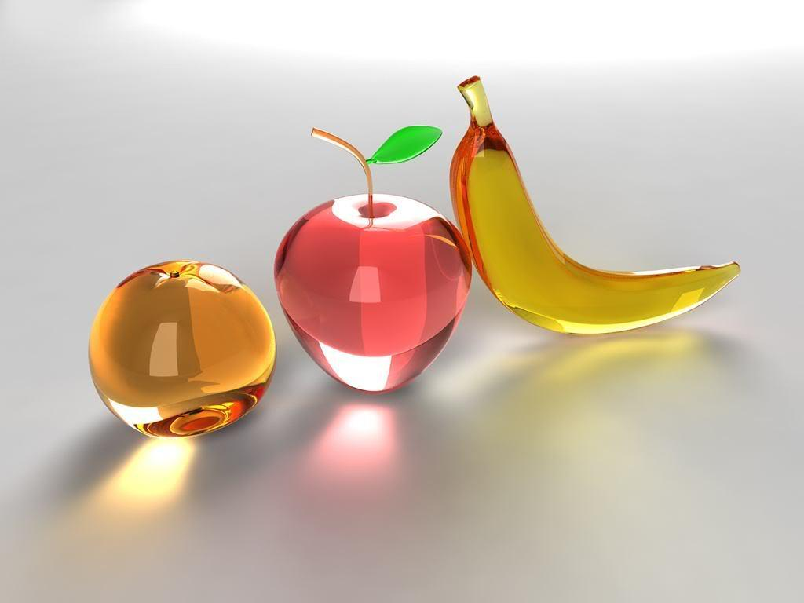

© Hodaya Vanunu
אבות המזון
 אבות המזון הם המרכיבים הבסיסיים הנחוצים לתפקודו ובריאותו התקינה של כל אדם. איזון נכון של אבות המזון הוא הבסיס לתזונה בריאה:מחסור באחד או יותר מהם עשוי להביא למצב של תת תזונה , אבות המזון כוללים
פחמימות, מקור האנרגיה הראשוני של הגוף
חלבונים וחומצות אמינו, משמשים חומר גלם לבניית תאי הגוף ויכולים אף להוות מקור אנרגיה
שומנים, עתירי אנרגיה לטווח ארוך ומשמשים בקרומי התאים
ויטמינים, קואנזימים המשמשים קטליזטורים (זרזים) לתגובות חילוף חומרים
מינרלים, קופקטורים בתגובות ביוכימיות שונות
.אבות המזון הם המרכיבים העיקריים והבסיסיים הנחוצים לגוף בריא
.אכילה נכונה המכילה את כל אבות המזון היא הבסיס של תזונה נכונה. אבות המזון חיוניים לתפקוד הגוף ולבריאות התקינה
.מחסור באחד מאבות המזון או יותר עלול לגרום לתת תזונה ולבעיות בתפקוד הגוף
.באתר זה נביא סקירה קצרה והסבר על כל אחד מאבות המזון השונים